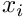
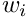

- Generated by
 1.9.1
1.9.1
|
C++ Integration
|
Struct used to store information and memory on the quadrature. More...
#include <jacobi.h>
Public Member Functions | |
| jac_quadrature (gauss_quad_type qtype, int nq, Tp a, Tp b) | |
| ~jac_quadrature ()=default | |
| template<typename Func > | |
| Tp | integrate (Func fun) |
| Calculates the integral of a function with values at quadrature points given by f with quadrature weights w. More... | |
Public Attributes | |
| Tp | alpha |
| Alpha weight of the quadrature. More... | |
| Tp | beta |
| Beta weight of the quadrature. More... | |
| int | Q |
| Number of quadrature points. More... | |
| enum gauss_quad_type | type |
| Quadrature type. More... | |
Struct used to store information and memory on the quadrature.
This strucuture is used to store data about the quadrature. It can be later used to integrate, derive or interpolate functions. It should be created using the jac_quadrature_alloc function.
|
inline |
|
default |
Calculates the integral of a function with values at quadrature points given by f with quadrature weights w.
Aproximates the integral of a function using a a quadrature.
Where  and  are given by the quadrature method emplyed.
| quad | A structure containing quadrature information |
| f | Value of function at quadrature points |
Definition at line 225 of file gauss_jacobi_interface.tcc.
References Tp.
| Tp jac_quadrature< Tp >::alpha |
| Tp jac_quadrature< Tp >::beta |
| int jac_quadrature< Tp >::Q |
| enum gauss_quad_type jac_quadrature< Tp >::type |